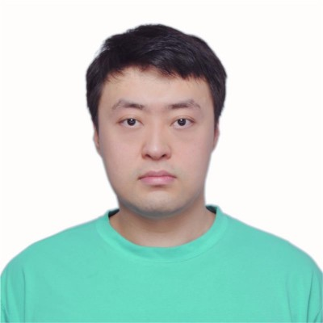
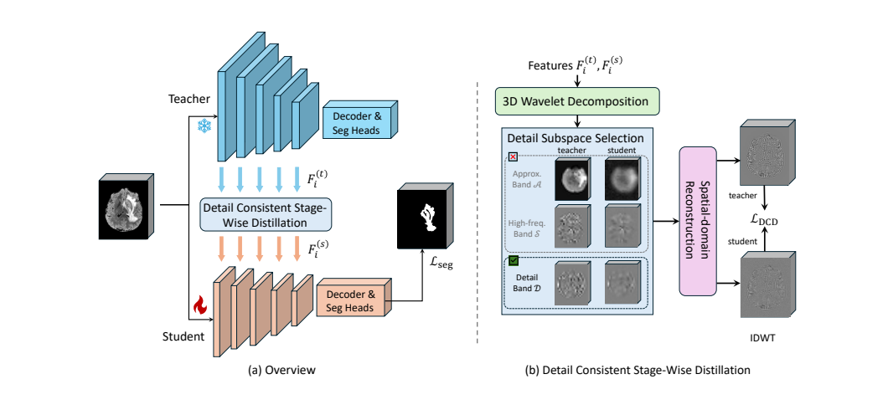
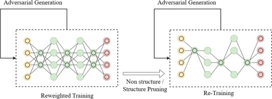
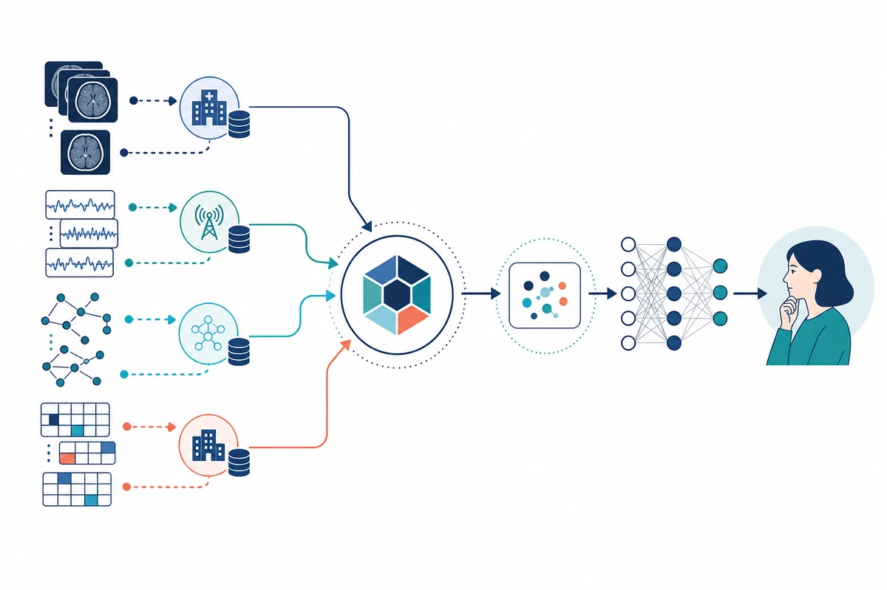

Distributed Learning
Federated and decentralized learning under client heterogeneity.

Ph.D. Candidate · University of Alabama at Birmingham
I am a Ph.D. candidate in Computer Science at the University of Alabama at Birmingham. My research develops AI methodologies for learning from complex and heterogeneous data.
I focus on efficient and reliable models, including model compression and adaptation, multimodal data fusion, longitudinal-data reasoning, and federated and decentralized learning. Medical imaging is a primary application area for my research.
Federated and decentralized learning under client heterogeneity.
Efficient and interpretable models for imaging and clinical data.
Reliable fusion of images, graphs, and medical data.
Knowledge distillation, pruning, compression, and optimization.

2026
Early Accept · Spotlight Presentation

2025
Intelligent Systems with Applications, 2025
First Author · Open Access

University of Alabama at Birmingham · GPA 4.0 / 4.0
Syracuse University · GPA 3.867 / 4.0
North China Electric Power University
University of Alabama at Birmingham
Research on efficient medical AI, distributed learning, model compression, and longitudinal-data benchmarks.
Citi Group · Shanghai, China
Full-stack development of an SMA platform for Basel IV operational-risk calculations using Spring, Java, Angular, and Oracle.